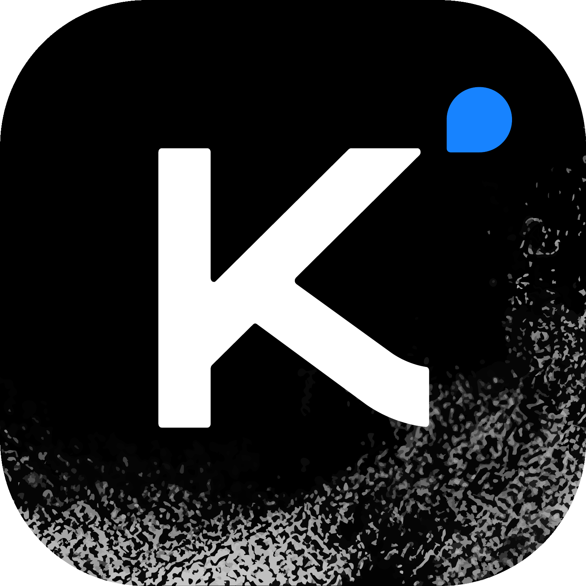

Problem: Efficiency Bottleneck at Scale
As LLMs evolve into Agents with RL test-time scaling, softmax attention creates severe bottlenecks: O(n²) time complexity, linearly growing KV cache, prohibitive memory/compute costs for long-horizon RL.
Linear attention uses finite-state RNN memory — historically lower quality than softmax on language modeling. Core cause: insufficient expressiveness of memory management.
How to build an attention architecture that matches or exceeds full attention in quality while achieving substantial efficiency gains in speed and memory?
Positional encoding responsibility fully delegated to KDA layers. MLA → efficient MQA at inference time.
Kimi Delta Attention (KDA)
\[ \mathbf{S}_t = (\mathbf{I} - \beta_t \bm{k}_t \bm{k}_t^\top) \operatorname{Diag}(\boldsymbol{\alpha}_t) \mathbf{S}_{t-1} + \beta_t \bm{k}_t \bm{v}_t^\top \]
Per-channel (not per-head) decay gate — each feature dimension has independent forgetting rate.
Each feature dimension has independent forgetting rate → precise RNN memory control, superior to Gated DeltaNet's coarse-grained gating.
DPLR variant with parameter binding reduces second-level chunk computations from 4 to 2 (~100% operator efficiency improvement).
7:1: training loss similar, val loss worse. 1:1: val loss similar, inference overhead high. 3:1: optimal balance.
• $\bm{\alpha}_t \in [0,1]^{d_k}$: low-rank projection (rank = head_dim)
• $\beta_t \in [0,1]$: sigmoid scalar gate
• Output: RMSNorm + low-rank sigmoid (like GLA)
Experimental Results
First linear attention to outperform full attention across short-context, long-context, AND RL scaling regimes.
| Benchmark | Kimi Linear | MLA | GDN-H |
|---|---|---|---|
| Short Context | |||
| MMLU | 87.2% | — | — |
| GSM8K | 93.0% | — | — |
| Long Context (128k) | |||
| Average | 54.5 | 46.8 | 46.1 |
| RULER | 84.3 | — | — |
| RepoQA | 68.5 | — | — |
KV cache reduced by 75%. 1M context decoding throughput improved by 6×.

Kimi Linear's superior RL regime performance provides architecture-level support for efficient inference in long-horizon agentic tasks. 75% KV cache reduction is critical for long-sequence tool-use scenarios.